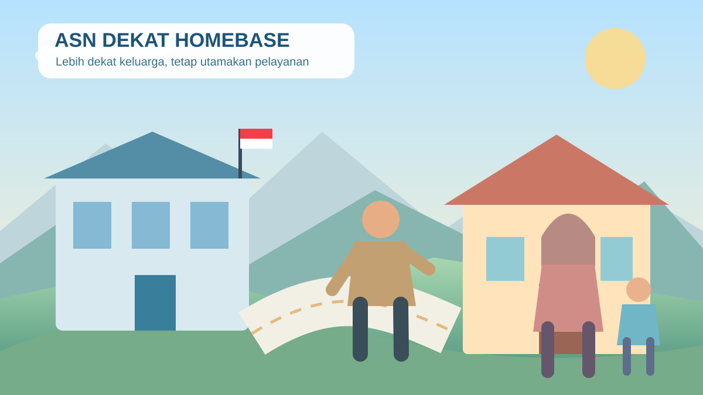

ASN Dekat Homebase 2026: 63 Instansi Terapkan, Bisa Ajukan Mutasi?
Kabar baik bagi ASN yang jauh dari keluarga. Tapi apakah semua pegawai kini bebas memilih lokasi kerja? Ini fakta dan batasannya.

Informasi BKN 30 Oktober 2026. Tidak ada ketentuan baru yang menjamin setiap permohonan pindah homebase disetujui.
Intinya
BKN menyatakan lebih dari 63 instansi telah menerapkan pendekatan penempatan ASN lebih dekat keluarga dan domisili. Di internal BKN, 101 pegawai tercakup hingga tahap keempat yang mulai November 2026. BKN belum menerbitkan daftar lengkap instansi tersebut dalam berita yang dirujuk.
Menerapkan pendekatan serupa menurut BKN.
Termasuk 15 orang tahap November.
Terbantu melalui program Si Zona.
Apa yang sebenarnya diumumkan BKN?
Dalam berita tanggal 30 Oktober 2026, BKN menjelaskan program Mendekatkan ASN ke Keluarga dan Domisili sebagai bagian dari 15 Kebijakan Pro-Karier ASN. Tahap pertama memindahkan 27 pegawai, tahap kedua 11, tahap ketiga 48, dan tahap keempat 15 pegawai mulai November 2026. Jumlah keseluruhan mencapai 101 orang. Karena tahap terakhir baru mulai November, angka 101 perlu dibaca sebagai total program yang mencakup penempatan terjadwal, bukan seluruhnya telah efektif pada Oktober.
Menurut BKN, lebih dari 63 instansi pemerintah di berbagai wilayah kerja kantor regional telah mengadopsi pendekatan serupa. Angka ini tidak berarti seluruh instansi menerapkan SOP, persyaratan, dan kuota yang sama.
Contoh nyata: Si Zona di Bondowoso
Pemkab Bondowoso menjalankan program Si Zona yang membantu sekitar 60 ASN. Dalam publikasi BKN tanggal 23 Oktober 2026, rata-rata jarak rumah ke tempat kerja berkurang dari sekitar 22 km menjadi 6 km. Ini contoh penataan penempatan di tingkat pemda, bukan bukti bahwa mutasi antarinstansi kini bebas persyaratan.
Apakah ASN otomatis berhak pindah dekat rumah?
Tidak. Kepala BKN menegaskan perpindahan tetap mempertimbangkan kebutuhan formasi, ketersediaan pegawai, kecocokan kompetensi, dan kesinambungan pelaksanaan tugas. Instansi tetap berwenang menilai kebutuhan organisasi.
Perlu dibedakan penataan internal dalam satu instansi dengan mutasi antarinstansi yang mengikuti prosedur dan persetujuan kepegawaian tersendiri. Program BKN tidak otomatis menghapus ketentuan mutasi yang berlaku.
Apa yang bisa dilakukan ASN yang ingin dekat homebase?
- Pastikan apakah instansi sendiri sudah memiliki kebijakan atau mekanisme penataan penempatan berbasis domisili.
- Konsultasikan kepada unit kepegawaian/BKPSDM; tanyakan kebutuhan jabatan, unit tujuan, dan dokumen pendukung.
- Siapkan alasan yang faktual (misalnya kebutuhan pendampingan keluarga), kompetensi, serta rekam kinerja.
- Bedakan permohonan penempatan internal dengan mutasi lintas instansi agar tidak salah prosedur.
- Tunggu keputusan resmi pejabat berwenang sebelum menganggap perpindahan disetujui.
Untuk pengelola kepegawaian pemda, program ini bisa menjadi inspirasi pemetaan lokasi kerja dan domisili pegawai. Namun, implementasi tetap harus diuji terhadap kebutuhan layanan, pemerataan personel, dan aturan kepegawaian.
Pertanyaan yang sering muncul
Apakah 63 instansi sudah diumumkan namanya?
Berita BKN menyebut jumlahnya, tetapi tidak memuat daftar lengkap. Jangan menganggap sebuah pemda termasuk di dalamnya tanpa konfirmasi resmi.
Apakah program berlaku bagi semua PNS dan PPPK?
Publikasi ini menjelaskan program dan contoh penerapan, bukan membuka hak perpindahan universal. Ketentuan penempatan dan perpindahan harus diperiksa sesuai status kepegawaian dan aturan yang berlaku.
Apakah ASN bisa langsung mengajukan ke BKN?
Tidak ada formulir nasional atau jalur pengajuan umum baru yang diumumkan dalam publikasi tersebut. Mulailah dari pengelola kepegawaian instansi masing-masing.
Apakah ASN Pemkot Bontang termasuk?
Belum ada konfirmasi dalam publikasi BKN yang dirujuk bahwa Pemkot Bontang merupakan salah satu instansi penerap. Informasi setempat perlu dikonfirmasi kepada BKPSDM.
Sumber primer dan catatan verifikasi
BKN, 30 Oktober 2026 — 101 pegawai dan lebih dari 63 instansi; BKN, 23 Oktober 2026 — program Si Zona Bondowoso. Artikel ini memisahkan data program dari hak mutasi menurut aturan kepegawaian.